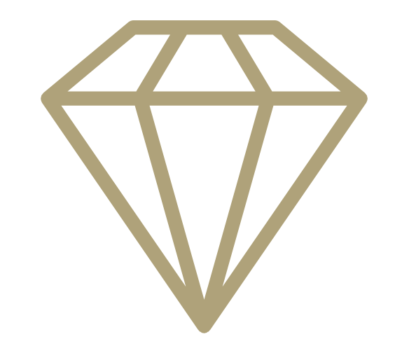
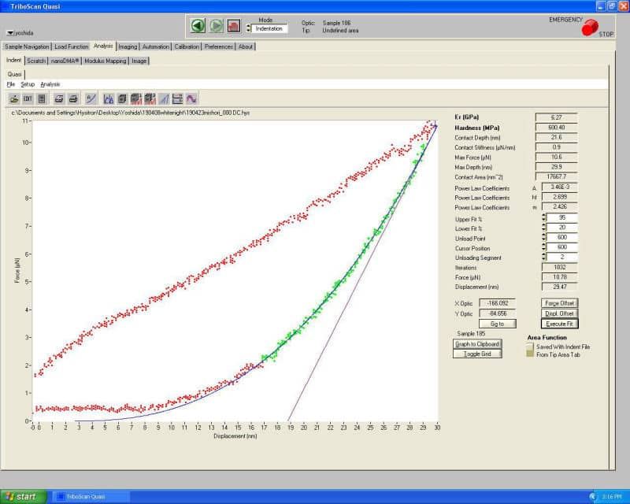
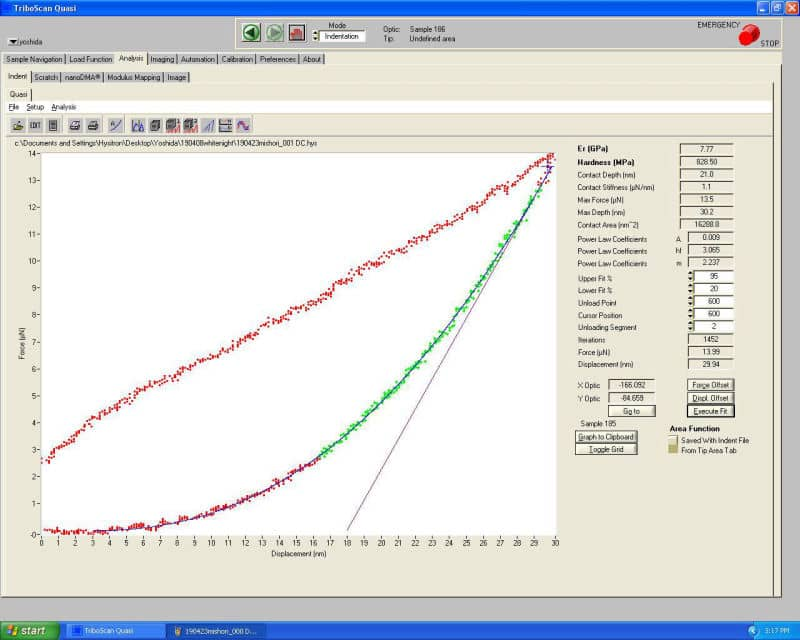
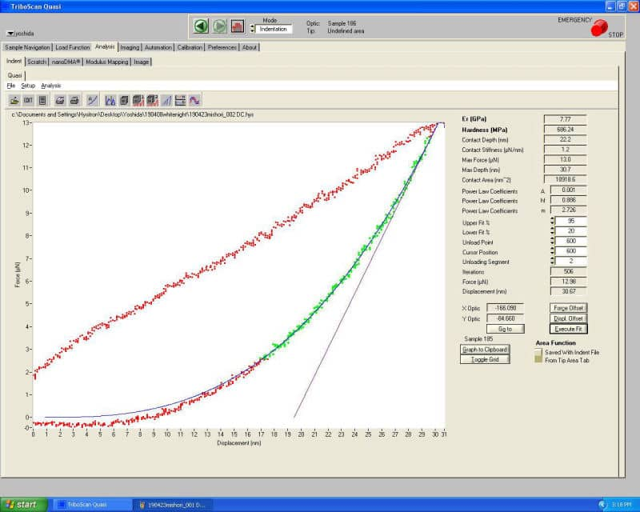
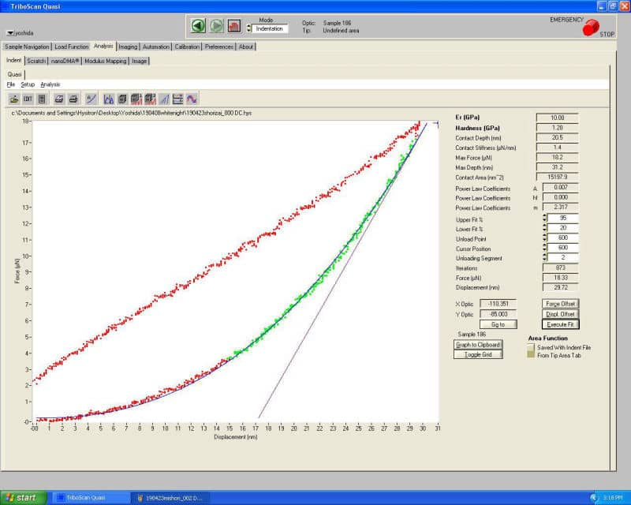
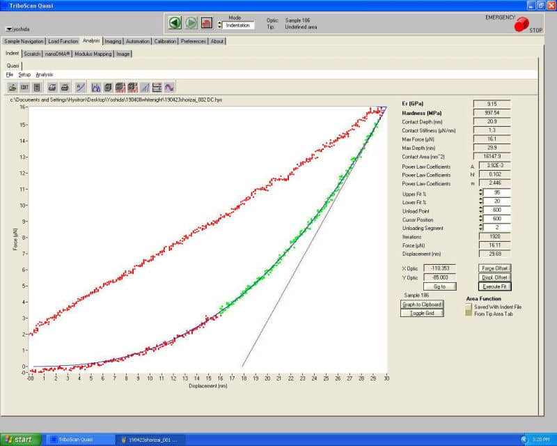

Inspection
公正なデータのための
工業試験 性能・試験結果
- スクラッチ試験
- 硬度試験
- 艶感試験
スクラッチ試験
ガラスコーティングは化学であり、何となく綺麗になった、艶が出たという雰囲気ではありません。LEO COATがこだわる「ガラスコーティング剤・原液100%」は性能を最大限に出すためにも最も重要であり、また他社製の「薄めたガラスコーティング材」との決定的な差でもあります。
横浜市経済局・横浜市工業技術支援センターにて「LEO COAT」の「スクラッチ試験」と「ボールオンディスク試験」を改めて行いました。
横浜県金沢区にある、横浜市工業技術支援センターが入居する金沢ハイテクセンター外観です。ここで試験を行います。
2019年3月に過去のデータではなく、最新のデータを取り、自社製品の品質を再確認するために試験にきました。
試験ではこの様な施工サンプルを持ち込みます。黒く塗装されクリアコート仕上げの板と、コーティング施工済を比較します。
ボールオンディスク試験はCSM-Tribometerという装置で行います。
荷重:1N（1ニュートン：約0.1kg）の圧をφ6mmの鉄球にかけながら、回転数100rpmで塗装面に到達するまで、回転させて圧力をかけます。
圧力をかけて何メートル進めた時点で塗装面に到達したかを測定しながら確認します。グラフがどんどん伸びていきます。
スクラッチ試験はBURUKER AXS社製の検査機で行います。摩擦摩耗試験機（CETR-UMT2）となります。
φ6.35mmのSUSの鉄球を移動させながら圧力を0.1kgfから10kgfへあげながら検査し、電子顕微鏡でチェックします。
スクラッチに対してどのくらいの耐性があるかを測る試験ですので、10Kgfという高い荷重をかける厳しい試験です。
試験結果
視覚的に見て明らかな結果の差がでています。施工していない塗装面では塗装ハゲ、キズなどが大きく目立ちます。一方でLEO COATを施工したものはキズも少なく、塗装ハゲは発生しませんでした。
オフィシャルな報告書もいただきました。ここに記載された情報をわかりやすくご説明しながら、どのくらい自信を持って販売しているかをお伝えするために、計測での生データも公開したいと思います。

下地に達したと考えられる摩擦係数0.6以上に達するまでに未施工サンプルが23m であるのに対してLEO COAT施工サンプルは58mでした。 LEO COAT施工サンプルの耐久性は未施工サンプルに対して約2.5倍となっています。（工業技術支援センターの報告書より）
未施工サンプルと比較してLEO COAT施工サンプルはスクラッチ試験の結果、スクラッチ跡が 目立ちませんでした。これは摩擦係数が未施工サンプルと比較してLEO COAT施工サンプルが低いので表面を滑り、それにより摩耗しにくいのでスクラッチ跡が浅くなっていると考えられます。（工業技術支援センターの報告書より）
- 100%の原液
- ガラスコーティング剤、ポリマーコーティング剤ともに一切希釈していない、原液100%の本物のコーティング剤です。
- 
- 高いスクラッチ耐性
- ガラスコーティングを施工することで、試験結果からも明らかな高いスクラッチ性能で愛車を傷から保護します。
- 未施工の2.5倍の保護性能
- 未施工に比べ2.5倍のスクラッチ耐性で、塗装面に高い表面保護性能が獲得でき、愛車を傷から守ります。
硬度試験
ガラスコーティングは化学であり、何となく綺麗になった、艶が出たという雰囲気ではありません。LEO COATがこだわる「ガラスコーティング剤・原液100%」は性能を最大限に出すためにも最も重要であり、また他社製の「薄めたガラスコーティング材」との決定的な差でもあります。
「LEO COAT」の性能を確認するために、神奈川県立産業技術総合研究所にて、薄膜硬度計（ナノインデンター）を用いた硬さの測定を行いました。
神奈川県海老名市にある、地方独立行政法人神奈川県立産業技術総合研究所の外観です。ここで試験を行いました。
過去のデータではなく、最新のデータを取り、自社製品の品質を再確認するために、継続的に試験をしている一環です。
自動車塗装と同等の塗装を施した検体を２つ用意して、1つにLEO COATを施工し、もう１つは未施工のまま試験を行います。
ナノインデンテーションシステムである、TriboIndenter® Hysitronにて、試験を行っている写真です。
測定の様子（TriboScan Quasiの画面）
TriboIndenter®はBruker Nano, Inc.の登録商標です。
測定の様子（TriboScan Quasiの画面）
試験結果
報告書
薄膜硬度計（ナノインデンター）を用いて硬さ測定を実施した。
試験体は自動車塗装を模した平板試験片を使用し、LEO COAT施工済1つ、LEO COAT未施工の1つの計２検体で行った。
施工済と未施工を共に３回測定した時の硬さ平均値を比較した結果、塗装表面の硬度については、LEO COAT施工済の検体が約1.53倍大きい値となった。
（神奈川県立産業技術総合研究所 令和元年５月１０日発行 産技総研第５４号）
- 
- 
- 
- 
- 
塗装表面の硬度については、LEO COAT施工済の検体が約1.53倍大きい値となった。
- 100%の原液
- ガラスコーティング剤、ポリマーコーティング剤ともに一切希釈していない、原液100%の本物のコーティング剤です。
- 相対的に高い表面硬度
- LEO COATでは下地の強度によって表面の硬度が変動するため、公平性を保つ目的で相対的な試験を行っています。
- 未施工の1.53倍の硬度
- ナノインデンター試験では未施工と施工済みを比較して1.53倍の硬度となりました。硬度が上がることで愛車を傷から守ります。
散乱反射強度分布
株式会社村上色彩技術研究所にて「LEO COAT」の「像鮮明度光沢計」による測定と「三次元相対散乱反射強度分布」の測定を行いました。
この測定は、艶や深みと呼ばれる感覚で表現される質感を、数値で計測が可能なマシンで測定し数値化したものです。
像鮮明度光沢計（光学条件：30度 入射30度 受光）では鏡面反射立、鏡面光沢度では差がでなかったものの「視覚的な深み」が確認できました。その曖昧な理由を明らかにするために、最新の変角光度計GP-5での「三次元相対散乱反射強度分布」測定を行った結果数値的に明らかな差が確認できました。結果として科学的に良い成果が出ておりますので、詳細情報を含めてご紹介いたします。
日本電子測器株式会社色彩部として、標準色票の製作と色彩調整研究・指導に努めてこられ、昭和31年11月に分離独立し、株式会社村上色彩技術研究所として発足したそうです。
村上色彩技術研究所は創立以来、カラー・アピアランス（視覚情報処理に関する計測器の製作・色票類の製作・色彩管理の普及）の分野で業界のパイオニアとして活動されています。
試験ではこの様な施工サンプルを持ち込みます。黒く塗装されクリアコート仕上げの板と、コーティング施工済を比較します。このサンプルは試験ごとに毎回準備します。
測定方法について、お話をうかがいます。
こちらは本番で使ったマシンですが、外観は旧モデルですが、中身は最新のGP-5と全く同じものだそうです。
最初の像鮮明度光沢計による測定では、視覚的には差があるものの、結果としては曖昧になったため「三次元相対散乱反射」を改めてて測定していただきました。
三次元相対散乱反射強度分布を測定したマシンは、変角光度計（ゴニオフォトメーター） GP-5。心理的な「つや」も含めて、反射・透過体の光学的特性を知るための装置です。
試験結果
視覚的に見て明らかな結果の差がでています。LEO COATが色に深みを出す理由がこのチャートから見て取れることがわかりました。
オフィシャルな報告書もいただきました。つまり散乱光が少ないことによって「深み感」が出ることがわかりました。
- 質感を数字で
- 施工済みのサンプルでは散乱光が少ない事で「深み感」が出ている事が、試験の数値から見ても明らかになりました。
- 100%の原液
- ガラスコーティング剤、ポリマーコーティング剤ともに一切希釈していない、原液100%の本物のコーティング剤です。
- 未施工の3.82倍の艶
- 未施工に比べ3.82倍もの艶感の向上が認められました。